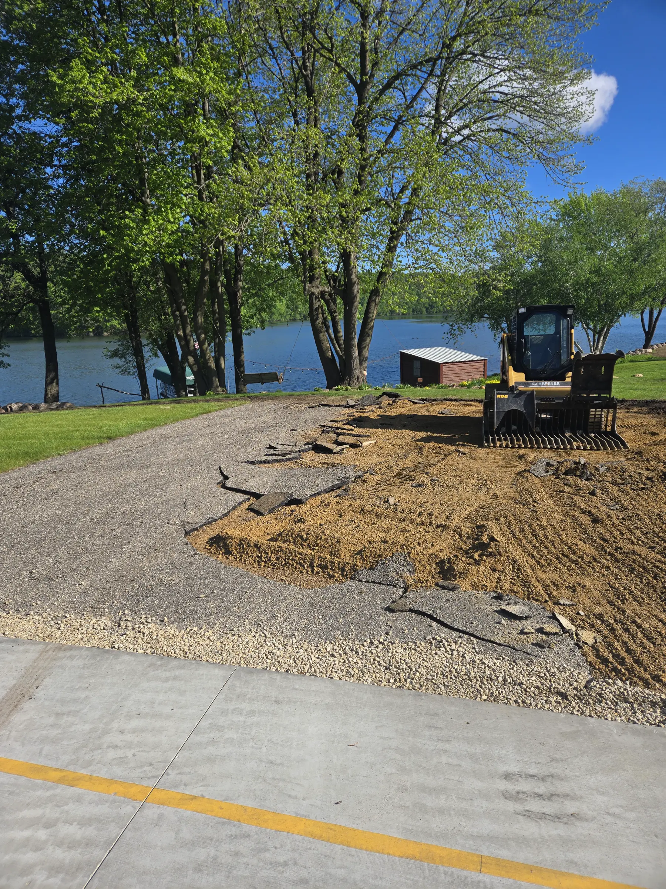
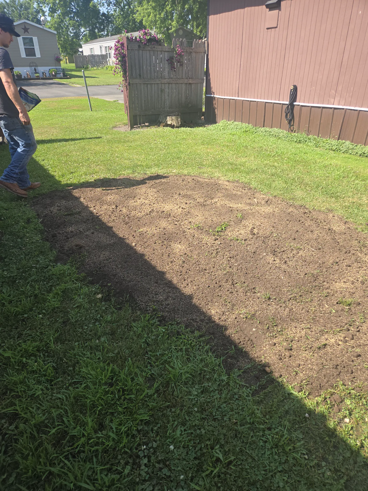
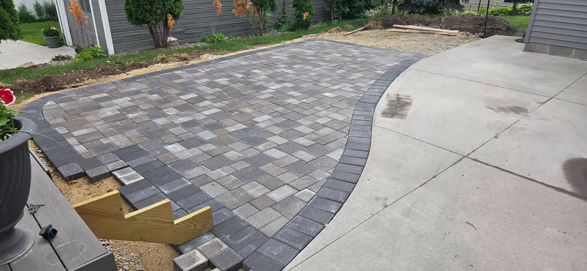

Stump Grinding
Remove unwanted stumps and prepare yards, fence lines, landscaping areas and construction spaces.
View service details →MGD Skid Loader Services handles stump grinding, driveway resurfacing, brush and debris removal, building-site preparation, asphalt and concrete removal, shed takedown, and 6"–24" hole drilling throughout a 50-mile service radius from Mazeppa.
MGD works with homeowners, property owners and contractors on projects that require skid-loader capability, attachments and hands-on site work. The focus is straightforward: understand the job, bring the right equipment and complete the work cleanly.

Remove unwanted stumps and prepare yards, fence lines, landscaping areas and construction spaces.
View service details →
Reshape, grade and refresh gravel or dirt driveways to improve drainage, appearance and drivability.
View service details →
Clear brush, tree debris, logs and unwanted material from yards, lots and project areas.
View service details →
Grade, clear and prepare areas for garages, sheds, additions and other building projects.
View service details →
Break out, remove and clear unwanted asphalt and concrete from renovation and property projects.
View service details →
Takedown and removal of sheds followed by grading and site preparation for the next use of the space.
View service details →
Auger hole drilling from 6 inches through 24 inches for deck posts, fence posts and related projects.
View service details →Photos and video from completed and in-progress MGD projects are included throughout the site so customers can see the type of work and equipment used.


“Quality work; job was done in timely manner; call Mike if you need skid loader work done!”Scott R.
“I called Mike about grinding a stump for me. He was there in a couple days did a great job cleaned it up Did a great job.”Rod F.
“Mike did an amazing job hauling and cleaning up tree brush and heavy logs from trees we cut down. He made sure the yard was nice and clean taking special care to our yard. It was a big job and Mike was able to get the job done timely and we are very satisfied with his work. Mike is also customer oriented always making sure his customers are happy. Thank you Mike! Your expertise and quality of work is second to none! We highly recommend him!”Jim and Lisa R.
“I hired this company to do my driveway gravel and my final grading of my lot and was very happy with the job they did! Not only was it a great job but very fair priced and done in a timely matter!”Steve O.
Submit the project location, service needed and a short description. MGD will follow up to discuss the scope and estimate.